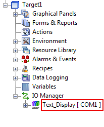

|
|
|
|
|
|
|
|
In the Vijeo-Designer application, add the script driver to the I/O Manager node.
Right-click the I/O Manager node, and click New Driver.
Select Generic Drivers as the Manufacturer, select Script Driver, then click OK.
Right-click the newly added driver node and click Configuration to access the Driver Configuration dialog box.
In the Driver Configuration dialog box, define the driver communication settings.
Make sure these settings match the serial communication settings on the equipment.
Field |
Description |
COM Port |
On the target machine, select the COM port for serial communications. |
Serial Interface |
Select the serial connection used on the target machine: RS-232C, RS-422 (2-wire) or RS-422 (4-wire). For information about connecting the serial equipment, see Section 18.8.4, Cable Connections. |
Flow Control |
None. |
Transmission Speed |
Defines the communication speed, which corresponds to the equipment's baud rate. The script driver supports speeds as slow as 2400bps and speeds as fast as 115200. |
Parity Bit |
Defines the parity bit used to validate communication packets. Even, Odd, or None. |
Stop Bit |
Defines the stop bit (1 or 2) for communication packets. |
Data Length |
Defines the data length (7 or 8 bits) of communication packets. |
Click OK to complete setting up the script driver.
Rename the driver appropriately.
This name is used in scripts when we send/receive communications with
the write
and read
methods.
